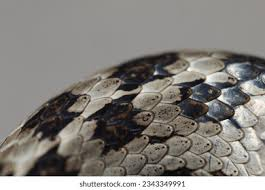
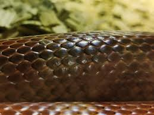
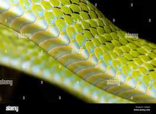
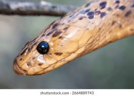

Smooth scales give snakes a glossy appearance and help
reduce friction during movement.

Keeled scales contain a raised ridge that gives snakes
a rough texture and improves camouflage.

Ventral scales are found on the belly and help snakes
grip the ground while moving.

Head scales protect sensitive areas and are often used
to identify different snake species.